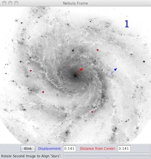

旋轉中的螺旋星雲
概述
這種模擬顯示阿德里安。範。瑪倫 的方式測量旋渦星雲的旋轉（於內部運動）。範馬倫 使用一個稱之為 "閃爍立體聲比對器" 的裝置，
讓他可以迅速觀看一個螺旋星雲和一個他在前些日期所截取的相同星雲的另一圖像。
在調整好前景恆星（這不是星雲的一部分）的兩個圖像後，範瑪倫測量了不同點的星雲從一個圖像到另一個間的位移。
他的測量顯示在幾個螺旋中會有一個較明顯的螺旋星雲， 這些結果被用來反駁旋渦星雲是獨立的星系的理論(如果他們是，
那她們就必須又大又遙遠，以致於任何旋轉在兩個接近的時間點中是被檢測不到的。
後來，哈勃發現，範瑪倫的分析是有缺陷的，他曾測得的旋轉不是真的。
到那個時候大多數天文學家已經開始接受螺旋星雲是獨立的星系。
這模擬提供了梅西101號螺旋星雲的兩個圖像，讓使用者可以不斷的在這兩張圖像做切換。
前景“星星”（紅點）已經被疊加在兩圖像中。使用者必須先透過旋轉對準前景恆星星雲與第二圖像。
然後，位移和距離可以通過拖動箭頭從星雲各個點的中心如果星雲經歷了一個純粹的旋轉則位移應垂直於從中心的方向。
位移的長度除以從中心出來的距離得到角度(弧度) 通過該星雲兩圖像間的旋轉
(假設位移和中心的距離落差較小)。 為了測試測量的一致性和確定旋轉角的準確性所以重複測量在好幾個星雲點的平均。
應該強調的是，在此顯現的旋轉效應模擬並非真實的。雖然螺旋星系的旋轉角度在以一個人的壽命長度間是測量不到的。
這個模擬的目的只是為了說明範瑪倫的方法，因為範瑪倫的(虛假的)結果，在歷史上帶領了好幾個天文學家拒絕了螺旋星雲是獨立星系的這個假說一段時間。
以下是使用這個模擬的小技巧:
- 要對齊星星，將紅色箭頭指向其中一顆星星。然後，切換到第二個星雲圖像，並使用滑塊來旋轉圖像，直至紅色箭頭再一次指向星星。
- 如何測量星雲的旋轉角度，使用遠離星雲中心的星雲點。當你確定好中心位移和距離那麼旋轉角度將是180*(距離/位移)/3.14
- 如果你測量無數個點這樣結果會是更好的，計算每個點的旋轉角度，然後算出所有點的平均旋轉角度。範瑪倫測量了87個不同的點，但你可能不會想做這麼多吧!
星雲框架
- 控制
- 閃爍: 來回切換M101的兩個圖像
- 位移: 顯示出了藍色位移向量的長度（以任意單位）。
- 與中心點的距離:顯示出了紅色位置向量的長度（以任意單位）。
- 旋轉第二圖像以對齊 星 : 使用滑塊來旋轉第二個圖像的角度以用來對齊前一個圖像的紅點。這個滑塊指有在顯示第二圖像時才可使用。
- 視覺元素
- 背景圖像: 兩個圖像(標記1和2的)為梅西101號螺旋星雲。這兩個圖像都出致於拍攝M101的哈勃太空望遠鏡
[引用: NASA, ESA, CFHT, NOAO; Acknowledgement - K.Kuntz (GSFC), F.Bresolin (U.Hawaii), J.Trauger (JPL), J.Mould (NOAO), Y.-H.Chu (U. Illinois)].
- 紅點: 代表不在星雲中的一個前景恆星。在測量星雲旋轉之前這些恆星必須對齊。
- 紅色箭頭:測量從星雲到星雲點的中心向量，單擊並拖動這個箭頭的頭部放置在星雲點的位置。
- 藍色箭頭: 向量表示兩個圖像之間星雲點的位移。單擊並拖動箭頭的尾巴把它的第一個圖像中的星雲點。然後單擊並拖動箭頭的頭部將其放在第二圖像中的相同的星雲點。
Todd K. Timberlake (ttimberlake@berry.edu)